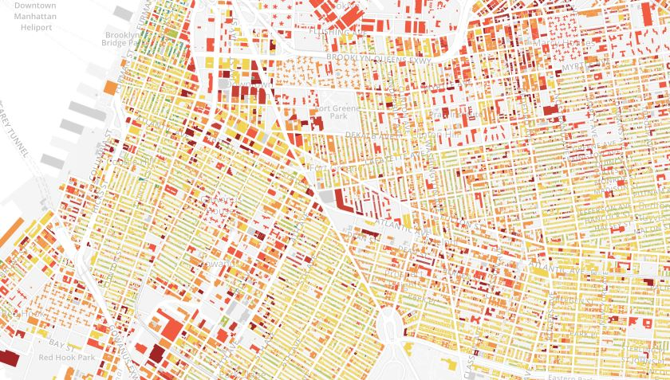

Про проект
Подібні карти існують для багатьох міст світу. Ось наприклад карта будівель Амстердаму.

А це така ж карта для Брукліну

Такі проекти дають змогу краще зрозуміти місто, побачити історію його розбудови.
В розвинених країнах настільки детальні карти стали можливі завдяки наявності відкритих даних про будівлі міста. Україна ж знаходиться лише на початку довгого шляху до справжньої доступності публічної інформації.
Щоб намалювати цю мапу нам довелося шукати інформацію на сайтах з оголошеннями про оренду та купівлю квартир. Наш запит до Київської міської державної адміністрації на надання відповідної інформації було передано до Департаменту містобудування та архітектури, але наразі жодної відповіді так і не було отримано.
Як бачите, виглядає вона не настільки наповненою, як мапи. Це й не дивно, адже на карті Києва з OpenStreetMap більше 80 тисяч будівель. Нам вдалося знайти дані лише про 8 тисяч житлових будинків.
Сподіваємося, що колись на цій карті все ж будуть всі будівлі Києва. А колись, можливо, ми зможемо зробити такі ж карти для всіх міст України.
В наших планах зробити аналіз і візуалізацію зібраних даних, а також створити карту, де кожен міг би вказати рік будівництва свого будинка.
Автори: Вадим Скляров та Влад Герасименко Будемо вдячні за пропозиції та критику. Надсилайте відгуки за адресою: sklyarov.vadym@gmail.com або ж пишіть приватні повідомлення нам у соцмережах.
Далі буде.